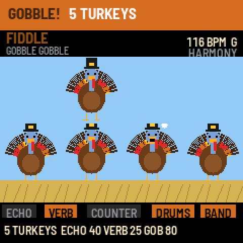
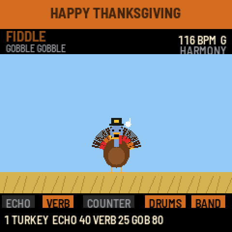
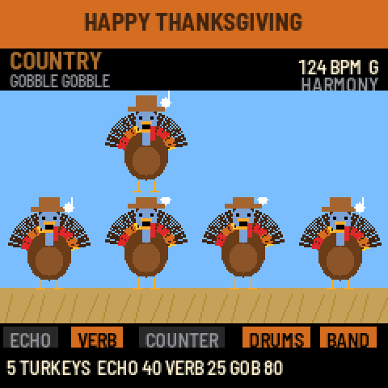
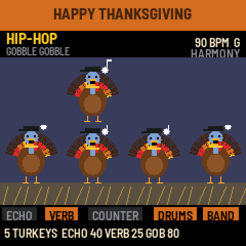
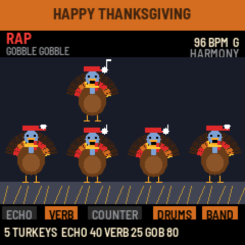
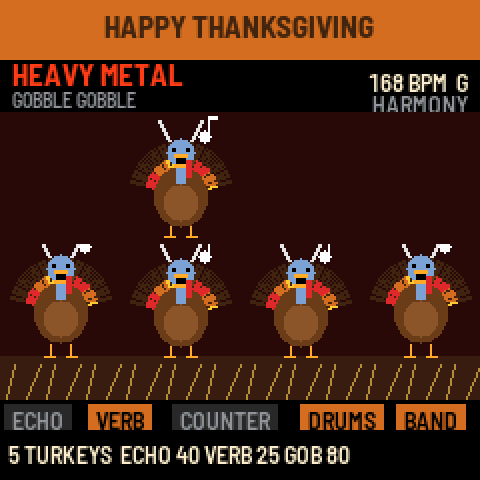
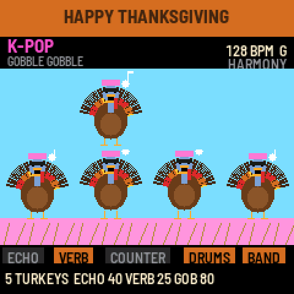
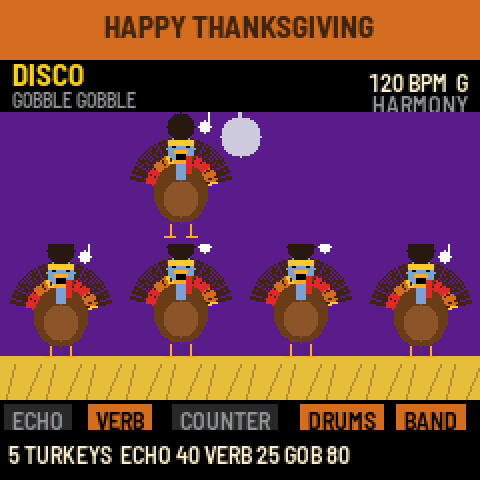
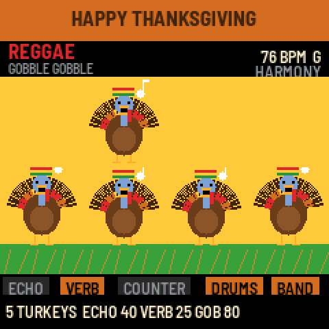

Happy Thanksgiving! A free, just-for-fun firmware for the M-VAVE FM-1. A choir of turkeys gobbles its way through two songs in twelve styles, and shows big in FM-1 Big Screen.

Gobble gobble said the turkey, gobble gobble all day long,
gobble gobble said the turkey, sing a happy turkey song.
Pass the pie and pass the gravy, gather round, Thanksgiving day,
gobble gobble said the turkey, then he gobbled right away!
Gobble Gobble Said the Turkey is an original tune, written for GOBBLE. Press GLO for Turkey in the Straw, the traditional fiddle tune (public domain). The turkeys don't sing words: they gobble every note, slow "gob-ble-ob-ble" bursts, and at the end of each line one of them lets out the full GOBBLE-OBBLE-OBBLE.
Turn PRESETS: Fiddle, Country, Polka, Hip-Hop, Rap, Soul, Heavy Metal, Pop, K-Pop, Disco, Reggae and Swing. Each has its own band and its own hats.








| Control | What it does |
|---|---|
| PLAY | Start and stop. It opens with one big gobble. |
| OCT+ / OCT− | One more turkey (up to 8), or one less. A new turkey gobbles hello. |
| PRESETS | The style. |
| ALGORITHM | How they sing together: Harmony, Round, Octaves or Chaos. |
| KNOB 1 – 4 | Tempo · echo · reverb · how hard they gobble. |
| SELECT | The key. |
| FX · ENV | Echo on/off · reverb on/off. |
| LFO | A counter-melody, sung by a little chick. |
| EDIT · SEL · ARP | Drums · the band · shuffle. |
| SEQ | A drum fill, then every turkey gobbles on the one. |
| REC | GOBBLE! Every turkey, right now. |
| GLO | The other song. |
| Keys | You're a turkey too: a gobble at that pitch. |
| HOME · SAVE | The controls on the screen · keep your settings. |
Going back: M-Flasher › Restore full flash › your backup. This build talks over USB (no Bluetooth). Unofficial and just for fun: use it at your own risk.
GOBBLE by Patrick Kellogg (MIT), built on fm1-base by Charles Vestal (MPL-2.0). "Turkey in the Straw" is traditional (public domain). "Gobble Gobble Said the Turkey" is original. Support the Patrick Kellogg Foundation for the Performing Arts: ko-fi.com/aikellogg